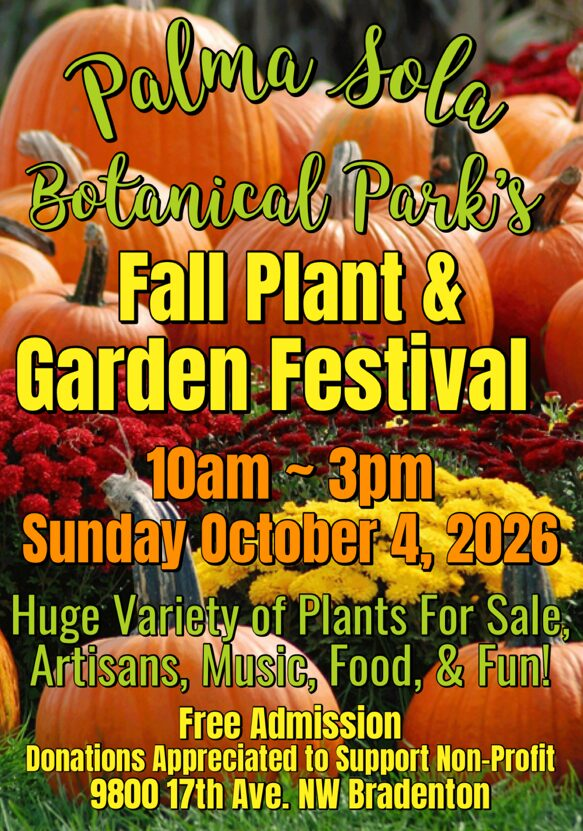
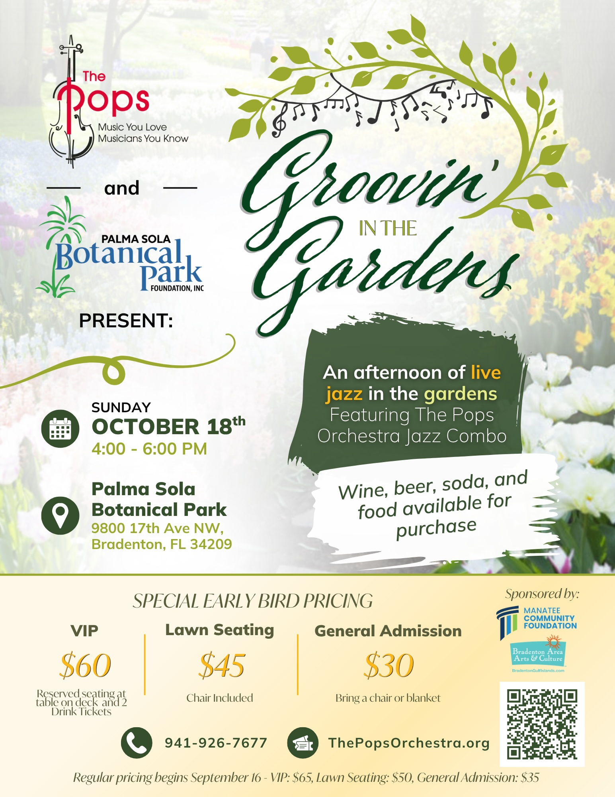
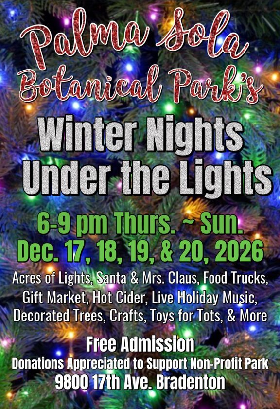
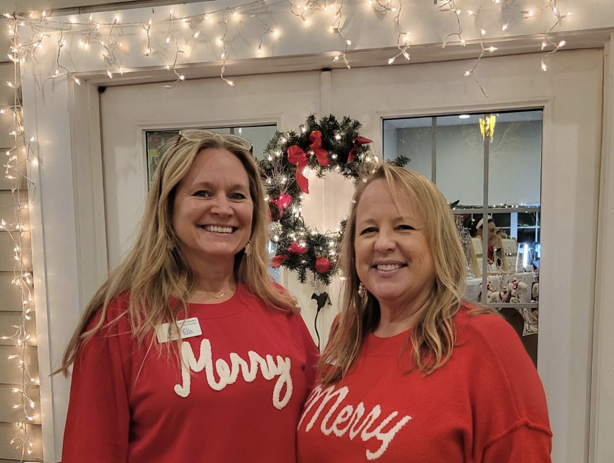
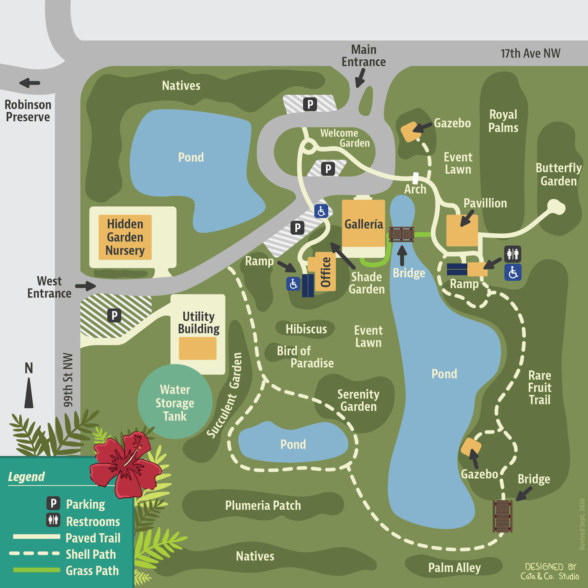

Oct 4 · 10AM - 3PM
Fall Plant & Garden Festival
Huge variety of plants for sale. Artisans, music, food, and fun!
The tradeoff: This is a review snapshot, not a live mirror. All seven discovery stories are available; their interaction is standardized for comparison.
September 30 content snapshot. Same park material throughout. Observation totals use the current homepage’s printed fallback figures; the photo total is from the local registry. No live counts or analytics. Site links open explore in a new tab. Collapse this note to judge the page.
Explore the gardens, look for wildlife, take a photo or follow a sign. What we learn and share together helps tell the story of this place.
Three big days this season — and something most weeks in between.

Huge variety of plants for sale. Artisans, music, food, and fun!

An afternoon of live jazz in the gardens with The Pops Orchestra Jazz Combo. Wine, beer, soda and food available for purchase. Tickets still available

Acres of Lights, Santa & Mrs. Claus, Food Trucks, Gift Market, Hot Cider, Live Music, Decorated Trees, Crafts, Toys for Tots & More
You may notice things are changing a bit around here. Take a look around. We are trying to focus on our core mission of appreciating nature: signs on the plants, displays in our air conditioned spaces, interesting facts about all the species here. More to come, so stay tuned!

— Beverly Zoller Burdette, Executive DirectorTen acres, and six places worth walking to.
You don't need a reservation, a tour or any botanical knowledge. Walk the paths at your own pace. The park closes occasionally for private events — worth checking the calendar before a weekend visit.
Directions, accessibility and more about each place →
What's blooming, what's fruiting, what's flying — and what somebody just planted. Open any card for a few things worth knowing about it.
Browse the collection →Palma Sola Botanical Park exists because local people decided a former county nursery was worth saving. It has run as a non-profit since 1993 with no federal, state or local government subsidy — volunteers do nearly everything else.
Recently: featured in Horticulture Magazine and on Bay News 9.
About the park →How cool is this? So far, 137 of you have recorded 1,815 observations of 568 species in this park on iNaturalist.
And the best part: 1,752 of those photographs are the images on this site — including the one behind these words — and on the signs in the garden. We swap them out all the time.
Let's keep it going — together.